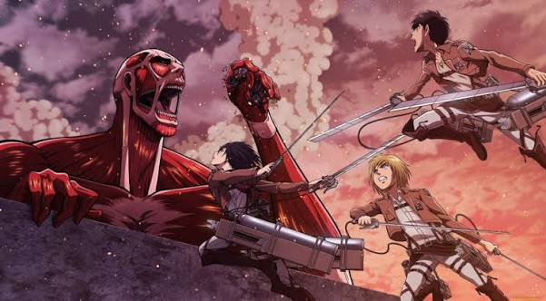

Свобода-как главная цель!
Сегодня поговорим о Развед-Корпусе с Аниме "Атака Титанов"
Разведывательный Корпус (調査 兵団 Chōsa Heidan?) — являлся подразделением вооружённых сил Парадиза наиболее активно участвовавшим в непосредственных боях с титанами и в их изучении. Из-за своих постоянных экспедиций солдаты Разведкорпуса являются наиболее опытными в использовании УПМ и противопехотного устройства пространственного маневрирования. Несмотря на небольшой успех в результате их деятельности, члены организации по-прежнему символизировали «надежду человечества», а их знаки отличия были известны как «Крылья Свободы». Цель Разведкорпуса — когда-нибудь изменить мир и вернуть то, что было отобрано у человечества.
РОД ДЕЯТЕЛЬНОСТИ
Данный род войск ответственен за исследование и поиск территорий, когда-то принадлежавших людям, а также освобождение их от титанов. Ещё до падения Стены Мария Разведкорпус занимался исследованием земель за пределами стен, однако вследствие огромных потерь во время постоянных сражений с титанами не смог продолжить исследование. До недавнего времени он обеспечивал необходимыми ресурсами территорию от района Трост до Шиганшины, готовясь к миссии по закрытию пролома в стене и битвы за отвоевывание Стены Мария.
Одной из недавних неофициально закрепленных за Корпусом задач стало исследование и наблюдение за титанами. Учитывая возможность ведения безопасного исследования в пределах Стены, было выявлено большое количество важной информации, касающейся их переносимости боли, зависимости от солнечного света и даже касательно наличия или отсутствия у них интеллекта или логики мышления.
Достижения
Большие достижения в области изучения титанов
Обучение и охрана Эрена Йегера, известного как Атакующий
Взятие под стражу Энни Леонхарт, известную как титан Женская Особь
Раскрытие личностей Бертольда, Райнера и Имир, известных как Колоссальный, Бронированный и Зубастый титаны
Революция и свержение лже-короля
Разработка наиболее эффективного оружия и тактик против титанов
Положение в обществе
С тех пор как Корпус стал постоянно занимать передовые позиции во время сражения с титанами, огромное количество смертей и низкий уровень эффективности стали причиной отказа многих кадетов от вступления в Разведкорпус, что видно, когда менее 10 % (21 человек) кадетов 104-го набора присоединяются к нему во время распределения. Поэтому Корпус постоянно страдает из-за нехватки солдат, а те немногие, кто все же решает в него вступить ради спасения человечества, как правило, отдают за это свои жизни. Несмотря на то, что большинство новобранцев погибают уже во время своего первого сражения, каждая из успешных операций в геометрической прогрессии увеличивает шансы оставшихся на выживание. Этот факт делает тех, кто уже в течение много времени состоит в Корпусе, самыми опытными солдатами во всей имеющейся армии. Кроме того, даже при нехватке солдат, их дисциплинированность лучшая среди трех имеющихся родов войск. Коррупция в Разведкорпусе полностью отсутствует, а доверие между солдатами абсолютное, нежели в Полиции. Каждый солдат Корпуса предан своему делу и готов сражаться до последнего. Как пример, Ильза Лангнар, оставшись одна на территории титанов без привода и даже лошади, не потеряла свой боевой дух.
Но, к сожалению, именно данный род войск также постоянно подвергается критике, политическим и финансовым трудностям. Так как, несмотря на самые лучшие показатели в отношении солдатских и командирских качеств, чиновники, влиятельные консерваторы и многие члены Военной Полиции ненавидят Разведкорпус и считают его содержание просто ненужной тратой денег и ресурсов, при отсутствии конкретных, явных успехов и постоянно высоком уровне смертности. Своё недовольство высказывают и многие жители простых деревень, которые устали пополнять бюджет Разведкорпуса дополнительными налогами. И лишь благодаря «поддержке» Короля, а также огромными усилиями самих Главнокомандующих, Разведкорпус все еще существует и находится под защитой от жадных чиновников и враждебно настроенных консерваторов.
ИСТОЧНИК С ПОЛНОЙ ИНФОРМАЦИЕЙ
Атака титанов
